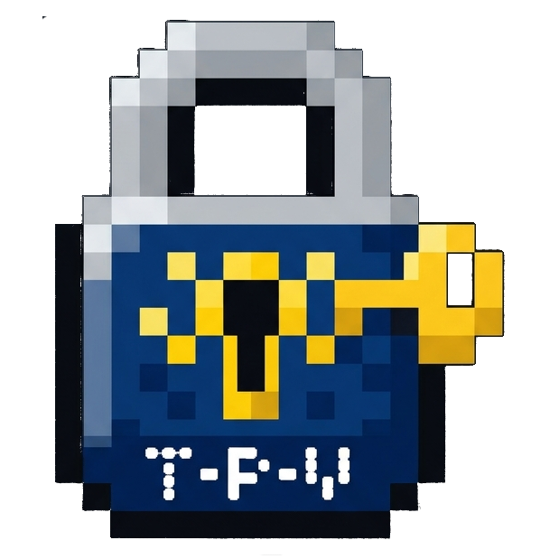

Tray Password Vault
Your KeePass passwords, one shortcut away. A small password manager for Windows 11 that lives in the system tray.

What it does
Always one shortcut away
Press Win+W (or your own shortcut), type a few letters, press Enter. The password is on your clipboard.
Works with KeePass files
Uses standard .kdbx databases, so the same file still opens in KeePass and KeePassXC.
Clipboard that cleans up
Copied passwords are removed after 30 seconds and kept out of clipboard history.
Locks with your PC
The vault locks when you lock the screen or the computer goes to sleep.
Getting started
- Download the zip, unpack it and run
TrayPasswordVault.exe. - Pick your existing
.kdbxdatabase or create a new one. - From now on the app starts with Windows and asks for the password once.
Shortcuts
| Input | Action |
|---|---|
| Typing | Search by name or login |
| Enter or click the password | Copy the password |
| Ctrl+U or click the login | Copy the login |
| Ctrl+N or + | Add an entry |
| Esc | Hide |
Good to know
- Supports KDBX 3.1 to 4.1. Databases that need a key file or hardware key are not supported.
- Every save keeps the previous file as
<database>.kdbx.bak. - The exe is not signed, so Windows SmartScreen may warn on first launch.